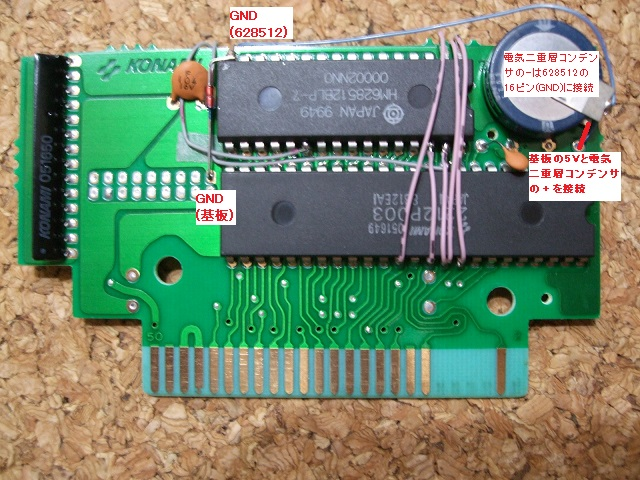
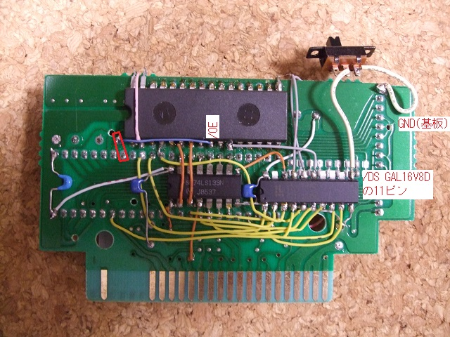

13．電気二重層コンデンサ
さて、いよいよ最後です。ゆとりあるコテさばきをしましょう。
回路図とよく見比べてください。電気二重層コンデンサ＋側を基板の適当な5Vとつなぎます。そして、−側は628512のGNDとつなぎます。また、SRAMのGNDからはダイオード1S1588を通して、基板のGNDにつなぎます。ダイオードはラインがはいっている方が基板のGND側にくるようにします。電気二重層コンデンサやダイオードの向きに気をつけて下さい。

次にSRAMの切り離し用スイッチをつけます。GAL16V8Dの15ピンをGNDに落とすと628512が切り離されます。GAL16V8Dの内部にはプルアップ抵抗が入っていますので、GNDに直接つなげるだけです。GAL16V8Dの他の未使用ピンも特に処理をする必要はありません。

2212P003の8ピン(/OE)と628512の24ピン(/OE)を接続します。2212P003の8ピンにつなぎにくければ近くにある22pFのコンデンサの足につなげても大丈夫です。写真の赤の四角内のどちらにつなげても構いません。
電気二重層コンデンサは、カートリッジの中で揺れるとそのうちリード線が切れて、メモリーの内容が消えてしまうので、動かない様にティッシュを詰めるとか、両面テープで固定するとか、リード線でなく、スズメッキ線にチューブを被せて絶縁したものを使う等して、リード線が切れないような対策をしておくといいでしょう。
あと、パスコンが足りないと動作が不安定になることがあるようなので、写真ではパスコンを2個追加しています。
 次へ
次へ